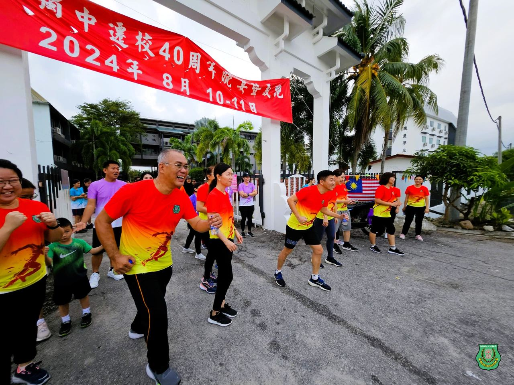
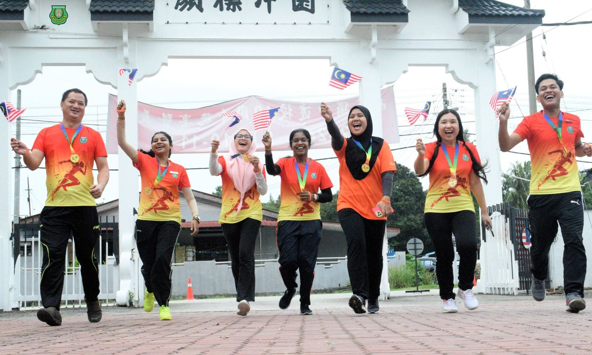
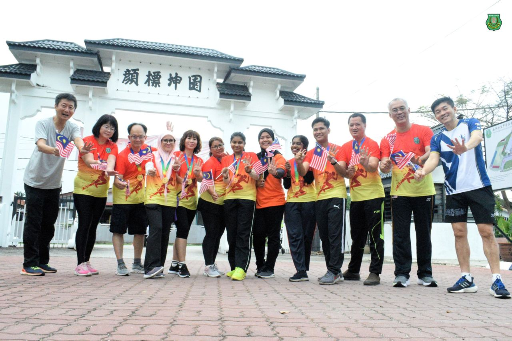
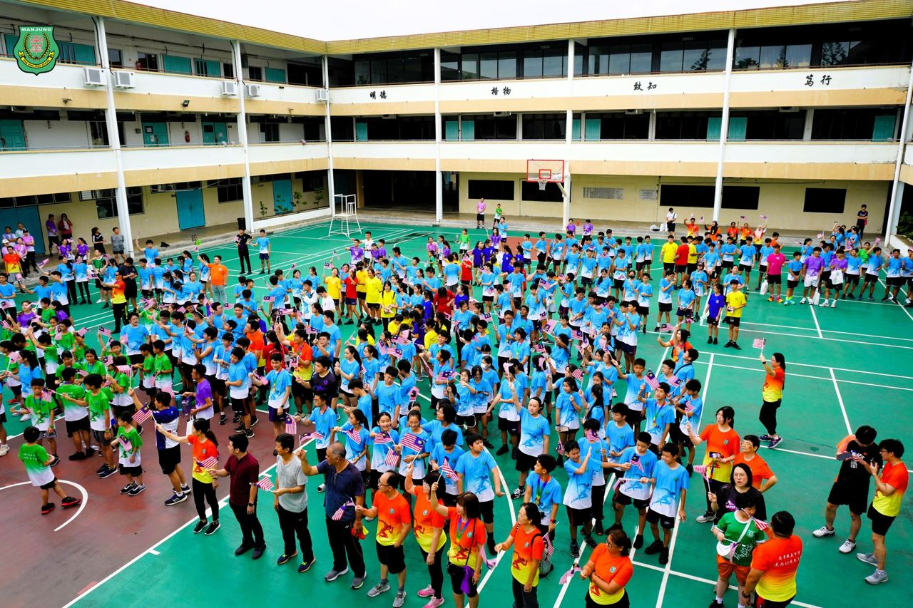
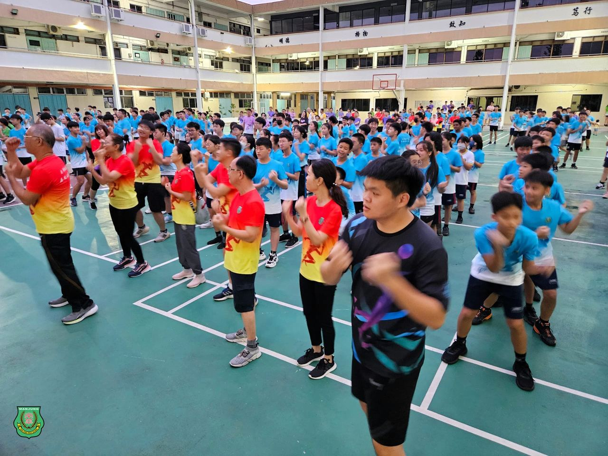
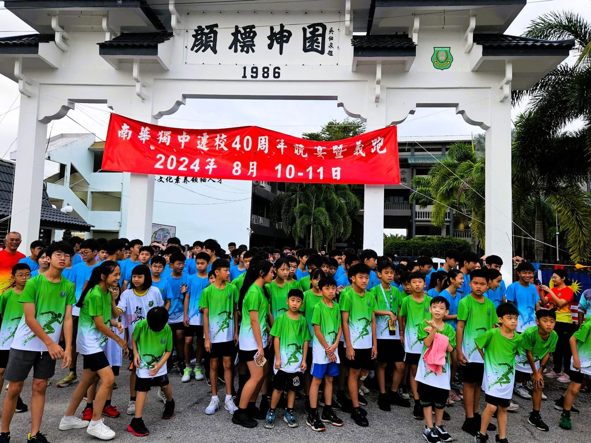

南华独中迁校40周年庆义跑：
南华独中迁校40周年庆义跑：
跑出健康，跑出力量，跑出未来
曼绒南华独立中学于日前举办了一场别具意义的义跑活动，作为该校迁校40周年庆典的重要环节。这次活动不仅吸引了全校师生，更有众多社区居民踊跃参与，共同庆祝这一里程碑时刻。
义跑当天，参与者们的热情高涨，从学生到教职员工，从校友到社区居民，大家齐聚一堂，用实际行动支持母校发展。跑道上，参赛者们挥洒汗水，展现出坚韧不拔的精神；场外，啦啦队和观众们的热烈加油声此起彼伏，将整个活动的氛围推向高潮。
南华独中董事长颜登逸先生在欢迎辞中强调了运动对身心发展的重要性。他以"运动快乐，快乐运动"为主题，鼓励全校师生和整个社区积极参与这次义跑活动。颜董事长表示："借此南华独中迁校40周年庆这个意义非凡的时刻，我们希望通过义跑这一壮举，不仅跑出健康，更要跑出力量，跑出我们美好的未来。"
霹雳阿斯达卡区州议员YB黄天荣在致辞中对南华独中的发展给予了高度评价。他说："每一次我到访南华独中，我都对学校董事部和历年来所有热爱华文教育的先贤们怀有崇高的敬意。正是因为他们的贡献和不懈努力，才使得独中能够办得越来越好。"黄议员还在现场宣布了一项令人振奋的消息：团结政府联邦与州政府每年将分别拨款30万令吉和20万令吉，总计500千令吉资助各华文独中。
值得一提的是，由于义跑活动恰逢8月份，主办方特别安排了欢唱爱国歌曲《Jalur Gemilang》的环节，并组织参与者挥舞国旗，共同庆祝第67届马来西亚独立日，为整个活动增添了浓厚的爱国主义色彩。
南华独中校长陈丽冰博士表示，义跑活动不仅仅是一场体育盛会，更是一次凝聚力量、传承精神的盛会。通过体育运动，学校成功地将师生、校友和社区紧密联系在一起，共同为华文教育的发展贡献力量，相信在大家的共同努力下，南华独中必将迎来更加辉煌的未来。





